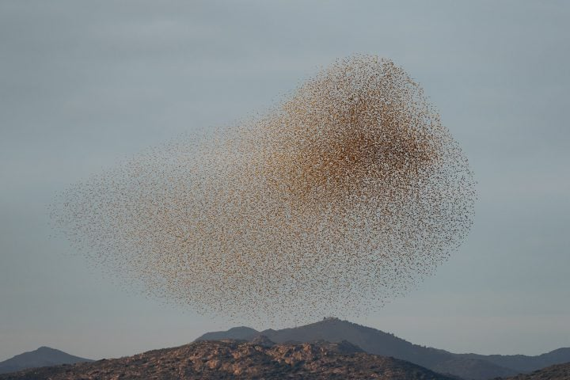

With Cinematic Beauty, Ludovic Balay Captures The Poetry Of Everyday Life
The work of Paris-based photographer Ludovic Balay spans fashion, still life, travel, interior design, and more. Beautifully lit and styled,...
Read more

Black Sun: Søren Solkær’s Captivating Record Of The Swirling Displays Of Starlings
Carlo Piro’s Mesmerizing Photographic Work Excites Both Heart And Mind
An Ode To Vietnam And Its Women: Chiron Duong On Its Photographic Project Portraits Of Áo Dài